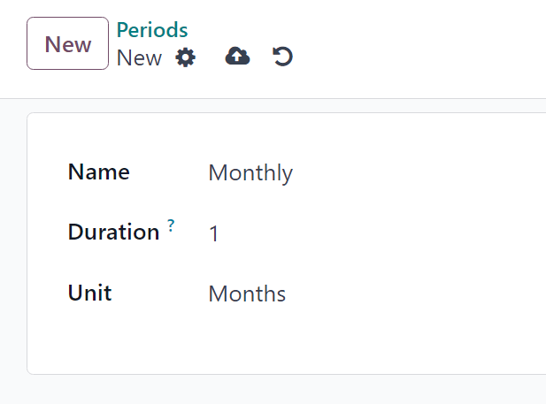
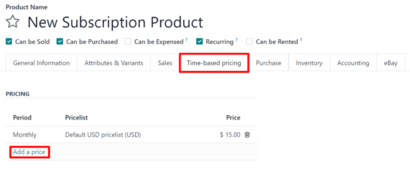
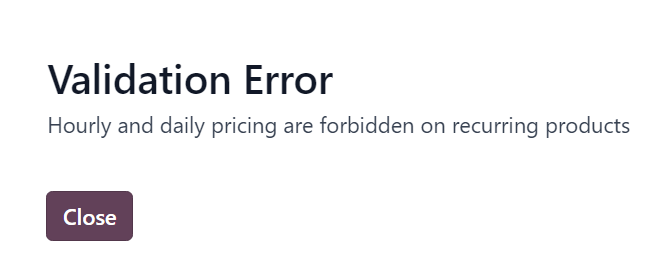
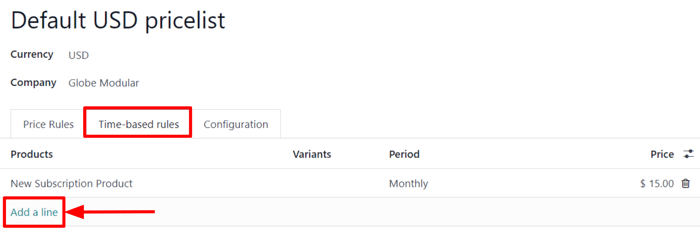

Subscription products¶
By closely integrating with the Odoo Sales app, the Subscriptions app enables users to sell subscription products alongside regular sales products. While regular products are sold on a one-time basis, subscription products are sold on a renewing basis, generating recurring revenue.
In Odoo, subscription products are also called recurring products.
Configure recurrence periods¶
To get started with subscriptions, the recurrence periods must be properly configured, as needed.
Recurrence periods are the time periods in which subscriptions renew. They designate how often the customer pays for (and receives) subscription products.
To configure recurrence periods, go to .

The Subscriptions app comes with some basic recurrence periods already configured:
Monthly
Quarterly
Weekly
2 Weeks
Yearly
3 Years
5 Years
New recurrence periods can be added and/or edited at any time.
To create a new recurrence period, click New on the Recurrence Periods page. Doing so reveals a blank recurrence period form.
Then, type in the Name and Duration of the recurrence period, and select the Unit that defines the duration.
Important
The unit Days cannot be used as a recurrence period on subscriptions. The daily recurrence is meant for rentals, and cannot be added on recurring subscription sales orders.
This limitation is there to avoid sales orders that would generate daily invoices.
Product form configuration¶
To create a new subscription product, navigate to , and click New.
Doing so reveals a blank product form, which can be configured and customized in a number of ways.
Note
By default, the Recurring option is already enabled, prompting Odoo to recognize it as a subscription product. Be sure to leave the Recurring and Can be Sold options enabled.
The Product Type field is set to Service by default, as well. However, subscription products can be set to other types, if needed.

Time-based pricing¶
Once the desired fields in the General Information tab have been entered, click the Time-based pricing tab on the product form.
From here, click Add a price to begin defining recurring prices.
In the Period column, select a desired recurrence period. In the Pricelist column, select a pricelist, if needed. Then, in the Price column, enter the price for that recurrence period.
Note
Daily and Hourly periods cannot be used on recurring products.
Note
There is no limit to how many lines can be added to the Time-based pricing table.
Tip
An existing product can be made into a subscription product, simply by marking it as Recurring, and configuring Time-based pricing on the product form.
Pricelists¶
Pricelists can be used with subscription products to give special pricing to customers included in pricelists.
This can be configured either in the Time-based pricing tab of the product form, or on the pricelist form in the Sales application.
To create recurring price rules for specific pricelists in the Time-based pricing tab of the product form, select a pricelist in the Pricelist column.

When pricelists are added to the Time-based pricing tab, the pricelist form in the Sales app is automatically updated.
Time-based pricing rules can also be configured directly on the pricelist form.
To do this, go to , and select a pricelist (or click New to create a new pricelist).
Note
Pricelists are also accessible through the Odoo Subscriptions app by following the same menu steps.
Then, on the pricelist form, under the Time-based rules tab, click Add a line.
Then, select a subscription product in the Products column, and select a recurrence period in the Period column. Lastly, enter a Price for that particular product and period. Add as many lines as needed.
When Time-based rules are added to the pricelist form, the Time-based pricing tab of the product form is automatically updated.